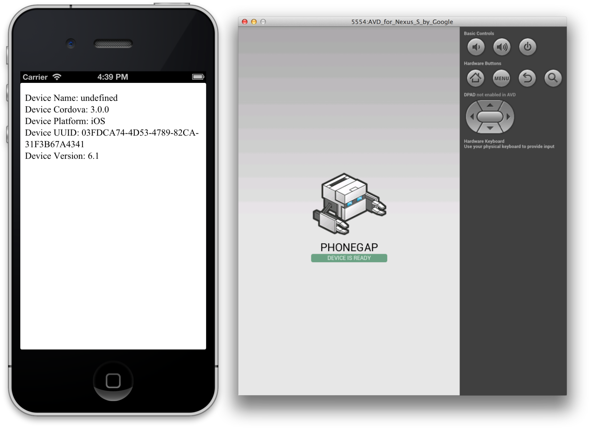

Hybride Apps mit AngualarJS und PhoneGap
Ein Ausblick in die Zukunft der hybriden Webentwicklung
Von Ivan Demin und Sergej Kasper für die T-Systems MMS
Agenda
- Motivation
- AngularJS
- PhoneGap
- Ripple Emulator
- PhoneGap Build
- Fazit
Hybride App Architektur

- Ein innovatives client-seitiges JavaScript Framework
- Lauffähig auf allen modernen Mobile- und Desktopbrowsern
- Eine gute Grundlage für intuitiv erweiterbare und wartbare Web-Frontends
Was ermöglicht Angular
- HTML für dynamische Views mit eigenen Tags erweitern!
- Das Two-Way Binding nutzen
- MVC, Service Abstraction und Dependency Injection verwenden
Angular macht HTML erweiterbar
Ist das cool?
Auf jeden Fall!
Angular macht HTML erweiterbar (JQuery Code)
Show Favorite Numbers: <input id="ShowFaveNumbers" type="checkbox">
<b id="FaveNumbers"> Auf jeden Fall!</b>
$(function() {
function showOrHide() {
var isChecked = $('#ShowFaveNumbers').is(':checked');
// imperative Code dependency
var fn = $('#FaveNumbers');
if (isChecked)
fn.show();
else
fn.hide();
}
$('#ShowFaveNumbers').change(function() {
showOrHide();
});
showOrHide();
});
Angular macht HTML erweiterbar (Angular Code)
Show Favorite Numbers: <input ng-model="ShowFaveNumbers" type="checkbox">
<b ng-show="ShowFaveNumbers"> Auf jeden Fall!</b>
Angular bietet ein two-way binding
Ist das auch cool?
Aber sowas von!
<input type="text" ng-model="model">
Das Coden {{emphaticModel}}
<script>
myController function($scope){
$scope.model = "kann beginnen";
$scope.emphaticModel = $scope.model + "!!!";
}
</script>
Angular is what the web browser would have been, had it been designed for applications.
Misko Hevery (Creator of AngularJS)
Warum Angular?
- Nach Initialer Einarbeitung beschleunigt Angular die Appentwicklung reasant
- Eigene HTML Tags sorgen für leichte Wiederverwendbarkeit von Code
- Vom Framework und Extensions bereitgestellte HTML Tags decken viele Use Cases ab.
- Angular ist leicht testbar
- Angular bietet eine klare Unterteilung der Anwendung nach dem MVC Pattern
- Umfangreiche Doku und guter Support
- Einfache Integration mit anderen libraries.
Angular auf einen Blick
Interesse an Angular
Wie binde ich Angular JS ein
<body ng-app>
<input type="text" ng-model="model">
Das Coden {{emphaticModel}}
<script src="jquery.min.js"></script>
<script src="angular.min.js"></script>
<script>
myController function($scope){
$scope.model = "kann beginnen";
$scope.emphaticModel = $scope.model + "!!!";
}
</script>
</body>
Wie erstelle ich einen eigenen Tag?
<h3>Wie erstelle ich einen eigenen Tag?</h3>
<div class="switch">
<input ng-model="showMe" type="checkbox">
<label><i></i></label>
</div>
<div ng-show="showMe">
<pre><code>/*Dieses Snippet*/</code></pre>
</div>
ngShow ein neugeborenes HTML Element
angular.directive('ngShow', [function () {
return {
restrict: 'A',
link: function (scope, element, attr) {
scope.$watch(attr.ngShow, function ngShowWatchAction(value){
element.css('display', toBoolean(value) ? '' : 'none');
});
}
};
}]);
ngShow ein neugeborenes HTML Element
var ngShowDirective = ngDirective(function(scope, element, attr){
scope.$watch(attr.ngShow, function ngShowWatchAction(value){
element.css('display', toBoolean(value) ? '' : 'none');
});
});
Pretty sure that HTML6 is going under the codename @angularjs!
Some tweet at Twitter
PhoneGap
- Open-Source-Framework
- Apps für zehn verschiedene Plattformen entwickeln (iOS, Android, Blackberry…)
- Bietet zusätzliche Schnittstellen, um Geräte-Hardware wie Kamera oder GPS-Sensor einzubinden
PhoneGap einrichten
- Über die Komandozeile (NodeJS vorausgesetzt):
npm install -g phonegap
- Manuell über die PhoneGap-Plattform
PhoneGap benutzen
- Anlegen eines neuen Projektes:
phonegap create meineErsteApp --name "meineErsteApp" --id "de.mms.meineErsteApp"
- Umwandulung der Web-App für die jeweilige Plattform:
phonegap run android
Beispiel Anwendung
<head>
<title>Gerätedaten-Beispiel</title>
<script type="text/javascript" charset="utf-8"
src="phonegap.js"> </script>
<script type="text/javascript" charset="utf-8">
// Warten auf Cordova
document.addEventListener("deviceready", onDeviceReady, false);
// Cordova ist geladen.
function onDeviceReady() {
var element = document.getElementById('deviceProperties');
element.innerHTML = 'Device Name: ' + device.name + '<br />' +
'Device Cordova: ' + device.cordova + '<br />' +
'Device Platform: ' + device.platform + '<br />' +
'Device UUID: ' + device.uuid + '<br />' +
'Device Version: ' + device.version + '<br />';
}
</script>
</head>
<body>
<p id="deviceProperties">Laden der Gerätedaten...</p >
</body>
Einbinden von PhoneGap
- Ab der Version PhoneGap 3.0:
<script type="text/javascript" charset="utf-8"
src="phonegap.js"> </script>
- Vor der Version PhoneGap 3.0:
<script type="text/javascript" charset="utf-8"
src="cordova-2.9.0.js"> </script>
Ausgabe von Beispielanwendung
PhoneGap Anwendung konfigurieren
- Mit Hilfe einer config.xml Datei können: Name, Kodierung, Rechte, Icons etc. spezifiziert werden.
- Dafür muss sich config.xml im Rootverzeichnis befinden.
Beipiel Config-Datei
<?xml version="1.0" encoding="UTF-8" ?>
<widget xmlns = "http://www.w3.org/ns/widgets"
xmlns:gap = "http://phonegap.com/ns/1.0"
id = "de.mms.mobileBeispiel"
versionCode = "10"
version = "1.0.0">
<!-- Versionscode ist nur für iOS und Android -->
<name>PhoneGap Beispiel</name>
<description>
Eine Beipielandwenung für die DLC 2013.
</description>
<author href="http://beispiel.de" email="ivan.demin@t-systems.de">
Ivan Demin
</author>
</widget>Rechte
<preference name="permissions" value="none"/>
<feature name="http://api.phonegap.com/1.0/battery"/>
<feature name="http://api.phonegap.com/1.0/camera"/>
<feature name="http://api.phonegap.com/1.0/contacts"/>
<feature name="http://api.phonegap.com/1.0/file"/>
<feature name="http://api.phonegap.com/1.0/geolocation"/>
<feature name="http://api.phonegap.com/1.0/media"/>
<feature name="http://api.phonegap.com/1.0/network"/>
<feature name="http://api.phonegap.com/1.0/notification"/>
Access Element
- Erlaubt den Zugriff auf Ressourcen anderer Domains.
<!-- erlaubt lokale Seiten -->
<access origin="http://127.0.0.1*"/>
<!-- individueller Zugriff -->
<access origin="https://build.phonegap.com" />
<!-- erlaubt Zugriff auf alle externe Ressourcen -->
<access origin="*" />
Ripple Emulator

Ripple Emulator
- Google Chrome Erweiterung
- Emulator für multi-Plattformen mobiler Umgebungen
- Für Entwicklung und Testung von Web/Hybrid-Apps geeignet PhoneGap integriert
PhoneGap Build

PhoneGap Build
- Cloudservice
- Kompiliert Quellcode in native Anwendungen
- Konfigurierung der App für die jeweilige Zielplattform
Weiterführende Literatur